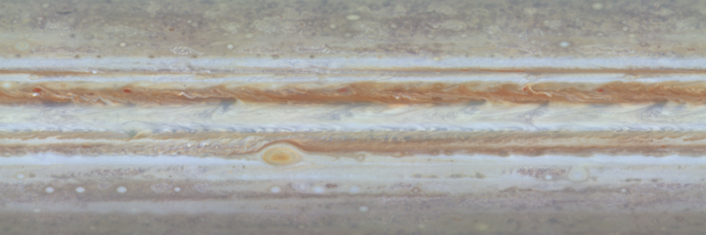
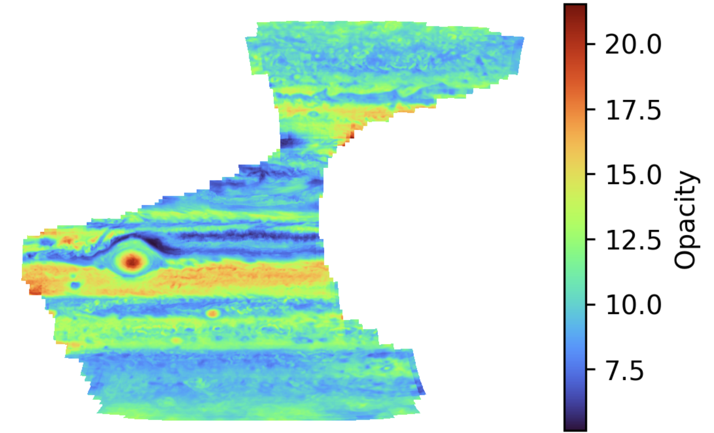
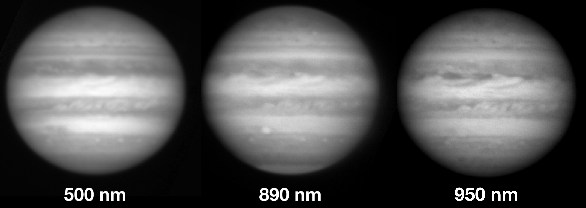

Jupiter's Color and Cloud Structure

The focus of my PhD was the color and vertical structure of Jupiter's uppermost cloud deck. Since getting my PhD, I have continued to work on several projects aiming to better understand Jupiter's weather, the true vertical structure of the clouds (which is very nontrivial to derive!), the coloring agent that gives the clouds their vivid red hues, and the deep atmospheric processes and bulk planetary characteristics that cause the dyanmic cloud structure. Most recently, I have been working on a project that utilized deep learning methods to generate models of photometrically calibrated JunoCam data, which we can then use to examine and characterize tiny clouds only observable by Juno.
Generating models of calibrated JunoCam data w/ deep learning
When the Juno spacecraft launched in 2016, it had onboard an optical camera named JunoCam that was meant to primarily serve as an outreach camera. Due to budget and time constraints, JunoCam was not fully photometrically calibrated before launch, rendering the photometric information in its images of the cloud tops unreliable for quantitative scientific analysis and modeling methods such as radiative transfer modeling.
To address this, I have been working with an interdisciplinary team of technologists, computer scientists, and planetary scientists to develop deep learning-based models of calibrated JunoCam data using calibrated HST maps of the planet and image-to-image translation methods. In practice, we are teaching our models the complex and highly non-linear relationship between HST images taken through relatively narrow filter functions at Earth's distance and JunoCam images taken through broadband filters at much higher spatial resolution. Our science goal is to quantify the properties of meso-scale storm systems which cannot be reliably observed from Earth due to their small physical size, but are consistently captured by JunoCam during Juno's close orbits to the planet.

The results of our models are reasonable and physically realistic, with errorbars comparable to HST's. After running thousands of individual radiative transfer models I have generated highly detailed maps of cloud properties for a series of represetative Juno orbits; find an example map of derived optical depth for Perijove 27 above. The initial version of our model-calibrated dataset is available here, and a student-led paper on a modification to our core method can be found here. I am leading the preperation of our science paper on meso-scale storm properties from JunoCam for publication in Nature Astronomy.
In general I am very interested in the implentation of machine learning in planetary science, especially when it comes to enhancing existing datasets or those with calibration or resolution issues. I believe strongly in utilizing these new methods in a rigorous and skeptical way in order to reliably and reasonably enhance the science returns of various missions or datasets. An additional project has been proposed for that will learn the relationship between 5-micron images of Jupiter that are sensitive to thermal emission from the deep atmosphere and optical HST images of the cloud tops.
Searching for a new cloud structure and coloring agent paradigm
The structure of Jupiter's clouds are nontrivial to derive, and thermochemical equilibrium models estimate cloud bases that don't always reproduce observations. Additionally, the identity of the coloring agent (chromophore) in Jupiter's atmosphere has been an active area of research for almost a century. Most recently, the most favored candidate is the photochemical product of photolyzed ammonia and acetelyne gas, although this gas mixture and photochemical process has issues with the microphysical and dynamical processes that can produce it. I'm currently working with scientists at Ames to reproduce the chromophore lab study of Carlson et al. 2016 in order to examine the possible relationshpi between UV exposure time and the optical constants of the chromophore. By applying these new measured chromophore optical properties to models of NAIC data (below), we might be able to tie the "age" of a cloud top to its dynamical timescale -- this could be a boon for understanding Jovian meteorology.
